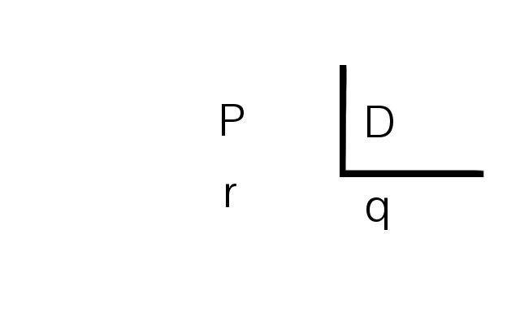
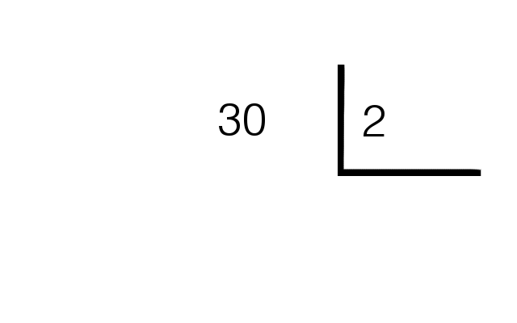
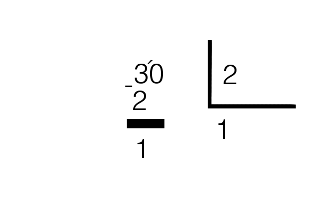
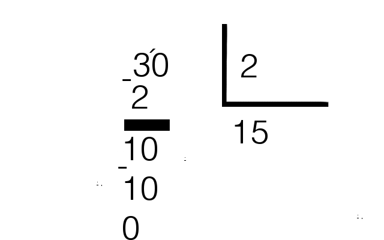

A divisão faz parte das 4 operações básicas da matemática, sendo o inverso da multiplicação. Consiste no fracionamento de um número, podendo ser inteiro ou decimal
Representamos a divisão usando o símbolo ":" ou "/"
p:d = q, onde p é o dividendo, d é o disivor e q é o quociente. Devemos buscar um número q, que ao ser multiplicado por d, resulte em p
Quando a divisão não é exata, ou seja, não é possível encotrar o valor de q, então a multiplicação de q por d fica um valor muito próximo de p,chamamos a diferença de p pela multiplicação de d por q, de resto, ou r
Exemplo: 10:2 = 5, pois 5 x 2 = 10
11:2 ≠ 2, pois 5 x 2 = 10, 11 - 10 = 1, ou seja, a divisào de 11 por 2, gera resto igual a 1
Quando o resto for igual a 0, dizemos que o número p é divisível por d, caso o contrário, p não é divisível por d
p = d.q+r
Organize a conta da seguinte forma
Vamos fazer a conta 30:2
Devemos achar um número que multiplicado por 2 resultará em 30. para facilitar a conta, vamos pelo número mais próximo do divisor, dentro do dividendo, nesse caso, o 3, então, agora, devemos achar o número que multiplicado por 2 reusltará em 3 ou um número próximo a 3, nesse caso, 2x1=2 é o mais próximo de 3, então:
Agora, deve-se prosseguir, descendo o próximo algarismo,caso ele não baste, desça o próximo, acrescentando um 0 ao quociente
O processo termina quando o resto é igual a 0
+ x + = +| - x - = +| + x - = -| - x + = -
Exemplos: 5 :(-5) = -1, -10 : (-2) = 5, 20 : 2 = 10
Quando o quociente não for inteiro, isso é, quando o resto não for igual a zero, deve se acrescentar um 0 no resto e colocar uma virgula no quociente, dai é só prosseguir com a divisão
Quando o dividendo e o divisor não forem números inteiros, deve se andar com a vírgula para a direita até que se tornem inteiros. Caso um se torne inteiro e o outro ainda esteja decimal, deve-se continuar andando com a vírgula, e adicionar no que já está inteiro, tantos 0 quanto o número de casas que se andou com a vírgula. Exemplo: 0,5:0,02->50:2 = 25